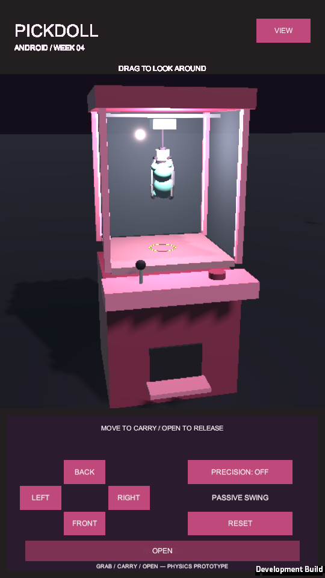
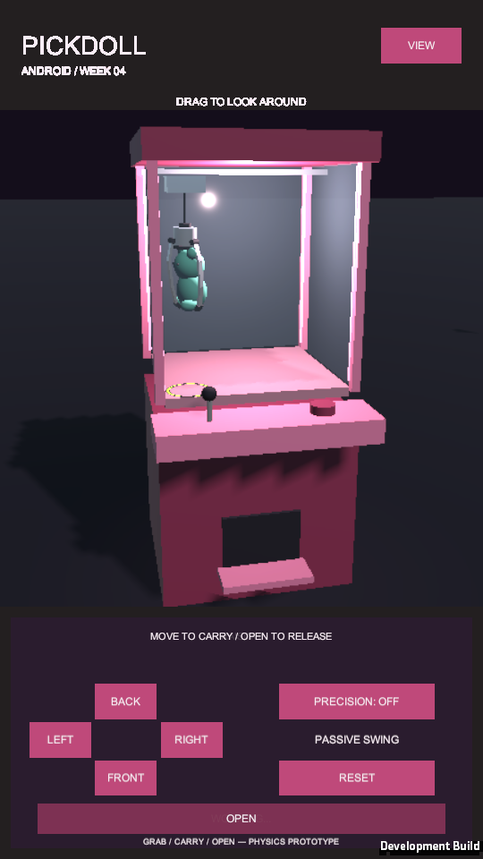
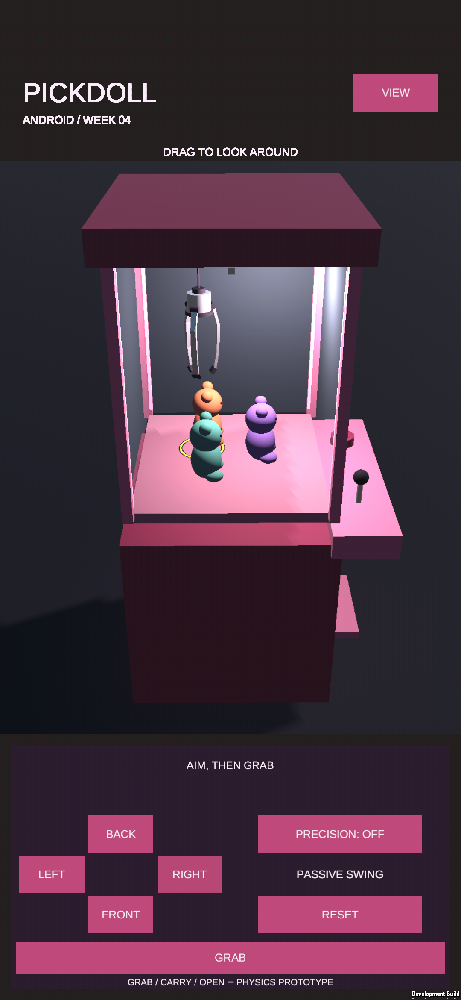

구석 집기는 안정적으로,
조작은 빠르고 섬세하게.
이번 주차에 바꾼 점
벽 간격에 맞춘 집게 곡선
손가락 중간 부분이 벽 가까운 인형을 밀어내던 형상을 종 모양 곡선으로 좁혔다. 고무 끝단 접촉 폭을 넓히고 닫힘 목표를 맞춰 몸통·발을 받치도록 했다. 유리벽과 독립 손가락 관절은 유지한다.
속도와 가속 분리
조준과 운반 속도를 따로 설정했다. 일반 이동의 출발·방향 전환은 가속을 완만하게 하고, 입력 해제와 미세 이동은 즉시 반응한다. 승강은 출발뿐 아니라 끝점에서도 감속해 인형이 튀는 것을 줄인다.
닫힘과 흔들림 안정화
닫힘 목표를 부드럽게 변화시키고 집게 몸체·손가락의 감쇠를 조정했다. 원형 이동의 관성 흔들림은 유지하며 정지 후 감쇠한다. 손가락이 인형을 붙잡도록 고정 조인트를 추가하지 않는다.
실제 입력 경로 검증
Windows 실행 검사는 방향 입력을 실제 조작 처리 경로에 넣는다. 정지 조준 집기는 집게 지지점과 인형을 함께 초기화하고, 이동 직후 집기는 따로 관찰해 잔여 흔들림과 구분했다.
| 최대 속도 설정 | 3주차 → 4주차 (월드 단위/초) |
|---|---|
| 조준 이동 | 0.24 → 0.32 |
| 상승 후 수동 운반 | 0.24 → 0.40 |
| 미세 이동 | 0.035 유지 |
| 하강 / 상승 | 0.28 / 0.24 → 0.30 / 0.42 |
가속·감속 구간이 있어 최대 속도 증가율이 전체 동작 시간의 단축률과 같지는 않다. 자동 복귀는 5주차 작업이다.
약한 그립은 강제 실패가 아니다
GRAB마다 한 번 그립 배수를 뽑고, 같은 집기·상승·운반 중에는 다시 뽑지 않는다. 기본 설정은 약한 범주 25%, 일반 범주 75%다. 약한 범주는 관절 스프링 강도에 0.40–0.65배, 일반은 0.95–1.05배를 적용한다.
25%는 약한 범주의 선택 확률이며 실패 확률이 아니다. 약한 힘이어도 형상에 걸리거나 받쳐지면 유지된다. 낙하·실패·획득을 강제하지 않는다. OPEN은 약한 닫힘 설정과 분리해 정상적인 열기 강도를 사용한다. 그립 범주는 게임 화면에 디버그 표시하지 않는다.
최종 PC 실행 화면


검증 결과
| 검사 | 관찰 결과 |
|---|---|
| 정지 조준 / 일반 강도 | 중앙·네 벽·네 모서리 각 2회, 18/18 들어 올림. 모서리 8/8, 벽 8/8. OPEN 모두 정상, 벽 안쪽 유지 |
| 일반 속도 운반 | 중앙 인형을 약 0.101 수평 이동 후에도 유지 |
| 입력·미세 조정 | 일반 0.8초 약 0.201 이동, 저속 0.2초 약 0.0070 이동. 입력 해제 후 정지, 하강 중 이동 통과 |
| 집기 사이클 | GRAB → 운반 가능 상태 약 3.98–3.99초. OPEN 대기 시간은 별도 |
| 원형 관성·감쇠 | 최대 기울기 약 28.10도. 각속도 RMS 약 4.281 → 정지 후 1.966으로 감소 |
| 이동 직후 집기 | 이동 장치 조준 X≈0.17에서 잔여 흔들림으로 집기 실패 관찰. 성공을 강제하지 않음 |
| 약한 힘 관찰 | 배수 약 0.40, 관절 스프링 강도 약 0.723, 인형 높이 약 1.601로 유지. 운반 중 배수 고정과 OPEN 확인 |
18/18은 다른 인형과의 간섭을 제거한 지정 배치, 정지 조준, 일반 배수 1.0의 검사다. 실제 플레이의 무작위 그립·조준 오차·인형 겹침·잔여 흔들림 전체에 대한 승률이 아니다. 지지점만 순간 이동했던 3주차 보고서와 시험 방식이 달라 수치를 직접 비교하지 않는다.
최종 Windows 실행 검사 원문
PASS no_manual_turn=True input_speed: normal_0.8s=0.201; precise_0.2s=0.0070; release_stops=True lowering_move=True swing=True; peak=28.10; movingRms=4.281; settledRms=1.966 normal 0/0: lift=True; y=1.603; cycleSeconds=3.99; contained=True normal_speed_carry=True; distance=0.101 open_releases=True normal 0/1: lift=True; y=1.597; cycleSeconds=3.99; contained=True open_releases=True normal 0/2: lift=True; y=1.599; cycleSeconds=3.98; contained=True open_releases=True normal 0/3: lift=True; y=1.599; cycleSeconds=3.98; contained=True open_releases=True normal 0/4: lift=True; y=1.599; cycleSeconds=3.99; contained=True open_releases=True normal 0/5: lift=True; y=1.603; cycleSeconds=3.99; contained=True open_releases=True normal 0/6: lift=True; y=1.600; cycleSeconds=3.98; contained=True open_releases=True normal 0/7: lift=True; y=1.598; cycleSeconds=3.99; contained=True open_releases=True normal 0/8: lift=True; y=1.598; cycleSeconds=3.99; contained=True open_releases=True normal 1/0: lift=True; y=1.603; cycleSeconds=3.99; contained=True open_releases=True normal 1/1: lift=True; y=1.597; cycleSeconds=3.98; contained=True open_releases=True normal 1/2: lift=True; y=1.600; cycleSeconds=3.98; contained=True open_releases=True normal 1/3: lift=True; y=1.599; cycleSeconds=3.99; contained=True open_releases=True normal 1/4: lift=True; y=1.599; cycleSeconds=3.98; contained=True open_releases=True normal 1/5: lift=True; y=1.603; cycleSeconds=3.98; contained=True open_releases=True normal 1/6: lift=True; y=1.602; cycleSeconds=3.98; contained=True open_releases=True normal 1/7: lift=True; y=1.598; cycleSeconds=3.98; contained=True open_releases=True normal 1/8: lift=True; y=1.598; cycleSeconds=3.99; contained=True open_releases=True settled_lifts=18/18; corners=8/8; walls=8/8; fixture resets suspension directly under aim (not comparable to week03's jumping-anchor test) moving_entry_observation: aim=(0.17, 0.00); prizeHeight=1.185; residual swing is allowed weak_force=True; multiplier=0.40; actualSpring=0.723; height=1.601; no required drop/failure
S26 울트라 확인
S26 울트라 SM-S948N에 0.4.0(code 4) 설치·실행 완료. APK v2 서명과 전면 게임 화면을 확인했다. 사용자가 이동·운반 속도, 미세 조정·하강 중 이동, 집기·OPEN과 흔들림을 시험한 뒤 정상 동작하며 조작감도 괜찮다고 확인했다.

APK SHA-256: ec8aaba50f78f7848ccb77f9111da3b0e7a6092a8650a0ee80b3693f5804939f
파일 크기: 42046869 bytes
실행과 다음 작업
방향 버튼·방향키: 이동 / PRECISION·Shift: 미세 이동 / GRAB·Enter·Space: 내려 집기 / 상승 후 OPEN: 놓기 / RESET·R: 초기화 / 드래그·VIEW: 시점. 하강 중 조정과 관성 회전은 유지한다.
씬: Assets/PickDoll/Scenes/Week04.unity
Windows: Unity/Builds/Week04/Windows/PickDoll.exe
APK: Unity/Builds/Week04/Android/PickDoll-week04.apk
빌드·검증: Unity/tools/Run-Unity.ps1 -Week 4 -Task Generate|Validate|Windows|Android
실행 검사: --pickdoll-week04-test
인형은 아직 임시 곰 3개다. 5주차에는 자동 복귀·하부 배출 통로·중복 없는 획득을, 6주차에는 저장·7개 랜덤 배치를 진행한다. 배출함과 수집 기록은 이번 범위에 포함하지 않았다.
0.4.0에서도 AssetPackManager 클래스 누락 시작 로그를 관찰했다. 화면·사용자 조작은 정상 확인했으며 공개 출시 전 추적 대상으로 유지한다. 장시간 발열·정량 프레임률은 후속 검증 대상이다.